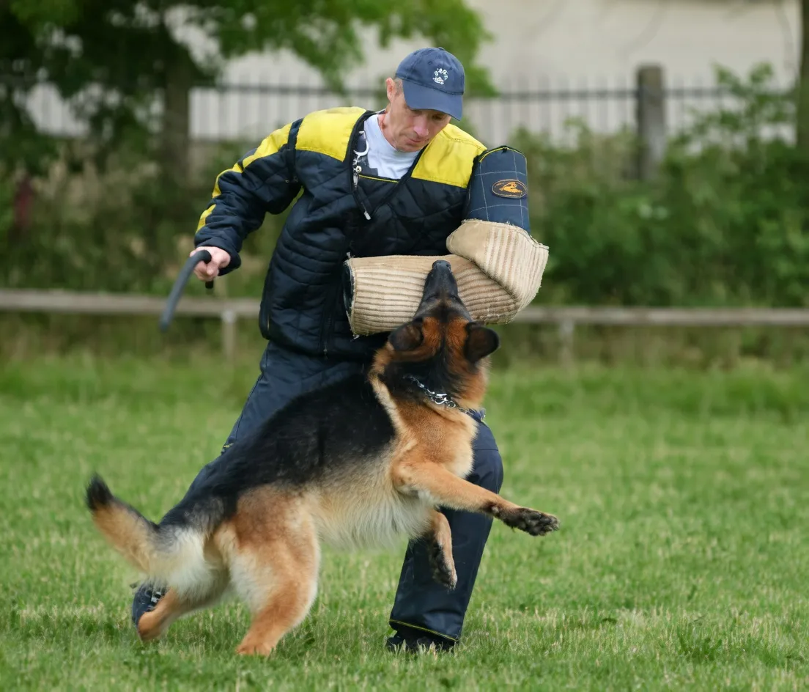

How to Train a German Shepherd Puppy at Home

Published: 31 Mar, 2026
Updated: 31 Mar, 2026
5 Min Read

Training a german shepherd puppy at home requires patience, consistency, and positive reinforcement. German shepherd puppy training is a crucial aspect of raising a well-behaved and loyal companion. As a senior veterinarian and SEO content expert, I will guide you through the process of training your german shepherd puppy at home.
Table of Contents
Introduction to German Shepherd Puppy Training
German shepherd puppies are highly intelligent and responsive to training. With the right approach, you can develop a strong bond with your puppy and help them become a well-adjusted and well-behaved adult dog. It's essential to start training your german shepherd puppy as early as possible, ideally from 8 to 10 weeks old.German Shepherd Puppy Training Basics
The foundation of german shepherd puppy training is built on positive reinforcement techniques, such as reward-based training and clicker training. These methods focus on encouraging good behavior and discouraging bad behavior. You can use treats, praise, and affection to reward your puppy for desired actions, such as sitting, staying, and coming when called. For example, if you're teaching your puppy to sit, you can hold a treat above their head and move it backwards towards their tail. As they follow the treat with their nose, their bottom will lower into a sitting position.Housebreaking and Socialization
Housebreaking and socialization are critical components of german shepherd puppy training. You should establish a consistent potty schedule and reward your puppy for eliminating outside. Socialization is also vital, as it helps your puppy become confident and calm in new environments and around new people and animals. You can socialize your puppy by taking them on walks, introducing them to new people and animals, and enrolling them in puppy classes. For more information on socialization, you can read our article on How Service Dogs Can Help Kids with Autism and ADHD.As a veterinarian, I recommend that you keep an eye on your puppy's overall health during the training process. If you notice any signs of illness or stress, such as diarrhea or excessive barking, consult with your veterinarian for advice.
Advanced Training Techniques
Once your puppy has mastered basic obedience commands, you can move on to advanced training techniques, such as agility training and scent work. These activities will challenge your puppy physically and mentally, helping to prevent boredom and destructive behavior. You can also teach your puppy to perform tasks, such as opening doors and fetching items, which can be useful and entertaining. If you're interested in learning more about advanced training techniques, you can read our article on Most Famous K9 Cops of All Time.| Age | Training Goals | Recommended Activities |
|---|---|---|
| 8-10 weeks | Housebreaking, socialization | Potty training, puppy classes |
| 11-14 weeks | Basic obedience commands | Clicker training, reward-based training |
| 15-18 weeks | Advanced training techniques | Agility training, scent work |
Common Mistakes to Avoid
When training your german shepherd puppy, it's essential to avoid common mistakes that can hinder the training process. One of the most significant mistakes is inconsistency, as it can confuse your puppy and make them uncertain about what behavior is expected. Another mistake is punishment, as it can lead to fear and aggression in your puppy. Instead, focus on positive reinforcement techniques and reward good behavior. For more information on how to calm your dog in stressful situations, you can read our article on How to Calm Your Dog in Stressful Situations.Conclusion
German shepherd puppy training requires patience, consistency, and positive reinforcement. By following the tips and techniques outlined in this article, you can help your puppy become a well-behaved and loyal companion. Remember to start training early, be consistent, and reward good behavior. With time and effort, you can develop a strong bond with your puppy and help them become a confident and well-adjusted adult dog.
Dr. Amelia Richardson
DVM, Senior Veterinary Editor
Veterinarian with 12+ years of experience in small animal medicine, pet nutrition, and behavioral science. Passionate about helping pet owners provide the best care for their furry companions.
Leave a Comment